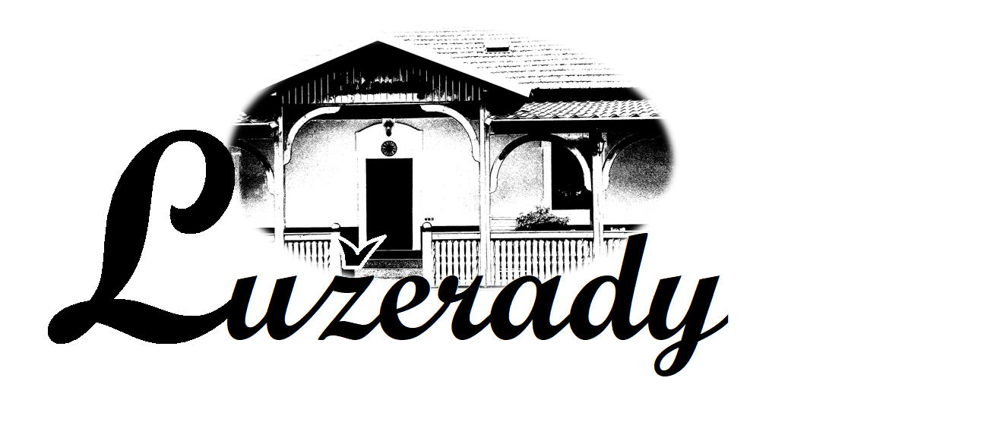

Na vodu přímo od nás
Půjčíme vám nafukovací člun a ukážeme, kudy na to. Ceník, návod k použití i smlouvu si můžete stáhnout předem.

RezervovatZahrádka mezi chmelnicemi, lodě na řeku a místo na svatbu.
Otevíráme v dubnu
Pivo z výčepu, domácí limonády a jídlo z grilu. Od dubna do září, ve stínu stromů uprostřed luk.
Areál ukrytý ve vzrostlých stromech uprostřed luk
Půjčíme vám nafukovací člun a ukážeme, kudy na to. Ceník, návod k použití i smlouvu si můžete stáhnout předem.
Obřad venku na trávě, hostina v historických prostorách a parket, kde se tancuje do rána. Postaráme se o vás od první schůzky po úklid. A když se zkazí počasí, něco vymyslíme.
Byli jste u nás? Napište pár řádků. Pomůžete dalším najít cestu k Ohři.
„Byl jsem zde jako svatební DJ. Krásné a čisté místo, usměvavá obsluha. K areálu není co vytknout. Dokonalé. Jen příjezdová cesta je horší.“
„Měli jsme zde svatbu a mohu jen doporučit. Od A po Z perfektní. Moc děkujeme za ten individuální přístup, za podporu od první myšlenky, nacházení řešení, přes operativní změny zejména kvůli počasí, až po finální úklid na my si mohli jen přijet pro věci. Ještě jednou moc děkujeme všem! Bylo to super“
„Hezké posezení s mojí rodinou. Měli jsme výbornou rybu na grilu, pochutnali jsme si. Určitě se příště zase vrátíme. Atmosféra a obsluha na jedničku 😄🙂“
„Klidné místečko, kam rádi jezdíme na zakončení okruhu kolem Loun na kole. Mají tu dobré pivečko, klobásky, grilovaný sýr a příjemnou atmosféru mezi chmelnicemi. Chtělo by to víc míst k sezení, museli jsme chvíli čekat, než se uvolní lavice, ale i na stojáka se dá dobře pokecat 👍😁“
„Krásné místo pan majitel ochotný příjemná obsluha rád se vrátím“
„Kus poctivě práce. Pamatuju si v jakém stavu to tu bylo a v jakém je to tu teď. Jako bonus skvělé pivo. Smekám klobouček 👍🏻“
„Příjemné prostředí. Vhodné na svatbu.“
„Včera měl zde můj syn a snacha svatbu.Musím vyzdvihnout to ,že všechen personál včetně majitele a jeho otce jsou opravdu zlatíčka a s úsměvem na tváři celý den až do ranních hodin, kdy jsme končili byli velmi moc příjemní. Všichni jsou moc úžasní a dělali i to co vůbec nebylo určitě v jejich náplní práce ..❤️🥰. Moc, moc opravdu děkujeme 🥰🥰🥰 Prostředí jako v pohádce.👏👏👏 Jediné co je škoda ,že město není schopno opravit příjezdovou cestu k tak krásnému a reprezentativními místu🤔“
„Svatební místo pro kouzelnou svatbu. Perfektní místo.“
„Velmi pěkné místo pro pořádání oslav, pohoda, klid, hodně prostoru. Jediné co se dá vytknout jsou příjezdové cesty,to je opravdu tankodrom,ale s tím majitel mnoho neudělá.“
„Moc hezké místo pro svatby, občerstvení pro cyklisty, výborná obsluha, skvělé jídlo. Jediný co musím vytknout je příjezdová cesta ze všech stran“
„Krásný poslední adventní čas. Příjemné prostředí, zábava pro děti, občerstvení pro děti i dospělé. Bezvadná vánoční atmosféra.“
„Nádherné místo. Úžasná obsluhující. Pivečko, káva, klobása,hranolky, grilovaný sýr super mňamka 😋. Doporučuji navštívit určitě nebudete zklamáni ale budete nadšený s občerstvením a s obsluhou 👍.“
„Pěkně posezení klidné místo“
„Skvělá zastávka na občerstvení při toulkách přírodou. Vynikající švestková limča 😊“
„Pro svatby a akce super místo. Případně i k výletům kolem řeky“
„Krásný kout za městem, moc příjemné prostředí.“
„Snaží se, příjemné místo a prima lidi.“
„Časté místo pro cyklisty nebo turisty, příjemný personál a dobré pivo.“
„Skvělý hamburgery a výborná švestková limonáda 🥰 příjemný posezení a super obsluha ☝️😊“
„Příjemné posezení dobré pivo a vždy je co zakousnout .“
„Krásné místo v přírodě, ideální na malý výlet z města...“
„Rakovnický Bakalář - výborná volba. Oblíbená zastávka při procházkách.“
„Krásné místečko na odpočinek a osvěžení alko i nealko“
„Navštivte toto místo. Jednoznačně. Místo s budoucností 👍“
„Krásné posezení uprostřed přírody. Klid a pohoda“
„Jako vždy spokojenost nabídka, prostředí, obsluha“
„Pivo párek na čerstvém vzduchu.“
„Výborná švestková limča! Děkujeme“
„Krásné místo na různé oslavy,svatbu atd.“
„Pohoda odpočinek zastávka na kole“
„VZPOMÍNKA NA DĚTSKÁ LÉTA“
„Výborná obsluha!!! Moc dobré pivko👍👍🍻“
„Milá obsluha, hezké prostředí.“
„Děkujeme za skvělý teambulding“
„Hezké prostředí, dobrá obsluha“
„Krásné“
„Super zastávka pro cyklisty 👌“
„Perfektní obsluha, skvele místo;-)“
„Super zastavka s obcerstvenim.“
Zahrádka, řeka, svatby a akce
Otevřeno duben až září
Kdysi se sem z Loun chodilo každou neděli s dechovkou. Hospodu teď po letech znovu otevřel vnuk rodiny, která ji koupila v roce 1968.
1314
První písemná zmínka o Lužeradech.1900
Budova hostince už stojí, patří Schwarzenbergům.30. léta
Každou neděli vede Lounské k hospodě dechovka.Dnes
Hospodu vede Zdeněk Bačkora, vnuk Sedlákových.Rezervace, poptávka akce nebo dotaz k lodím. Napište nebo zavolejte.
Duben až září
Pondělí až pátek16:00 až 20:00
Sobota a neděle12:00 až 19:00
Říjen až březenzavřeno
Rezervace bereme celý rok. Oslavy, svatby i firemní akce domluvíme i mimo otevírací dobu.
Pěšky z Loun: přes železniční most, za zahrádkami pěšinou podél chmelnic po proudu Ohře, asi kilometr. Pak lávka přes potok a kaštanová alej až k nám.
Na kole: po cyklostezce podél Ohře.
Autem: Lužerady 428. Poslední úsek příjezdové cesty je horší, jeďte pomalu.
Psi jsou u nás vítáni.